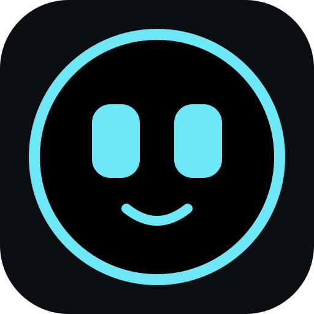

Install deskbuddy.dev
Put the firmware on your Waveshare board, straight from your browser. All you need is a USB cable.
This browser can't do it
Installing over USB uses Web Serial, which only Chrome, Edge and Opera offer, on a computer (Windows, macOS, Linux or ChromeOS). Firefox, Safari and phones do not support it.
Prefer to flash it yourself? Download firmware.bin (Original) or firmware-xl.bin (XL) from the releases and use esptool.
Install
Pick the board you have: the firmware of the other one gives a wrong picture (installing the right one fixes it).
- Connect the deskbuddy to your computer with a USB-C cable (one that carries data, not just charging).
- Click Connect and install and pick the port
USB JTAG/serial debug unit. - Wait until it finishes (about a minute). The deskbuddy then restarts by itself.
Note
This replaces the firmware on the device. If the original firmware is still on it and you want to keep it, first make a backup of the flash (see the docs). Afterwards you cannot go back without that backup.
Your Wi-Fi details and settings are kept if deskbuddy firmware was already on it.
Not working?
- No port in the list: try another cable or USB port. Otherwise hold BOOT while plugging in the USB cable and try again.
- Linux: your user must be in the
dialoutgroup. - Updating afterwards? That happens by itself: the deskbuddy fetches new versions from GitHub on its own (see the README).